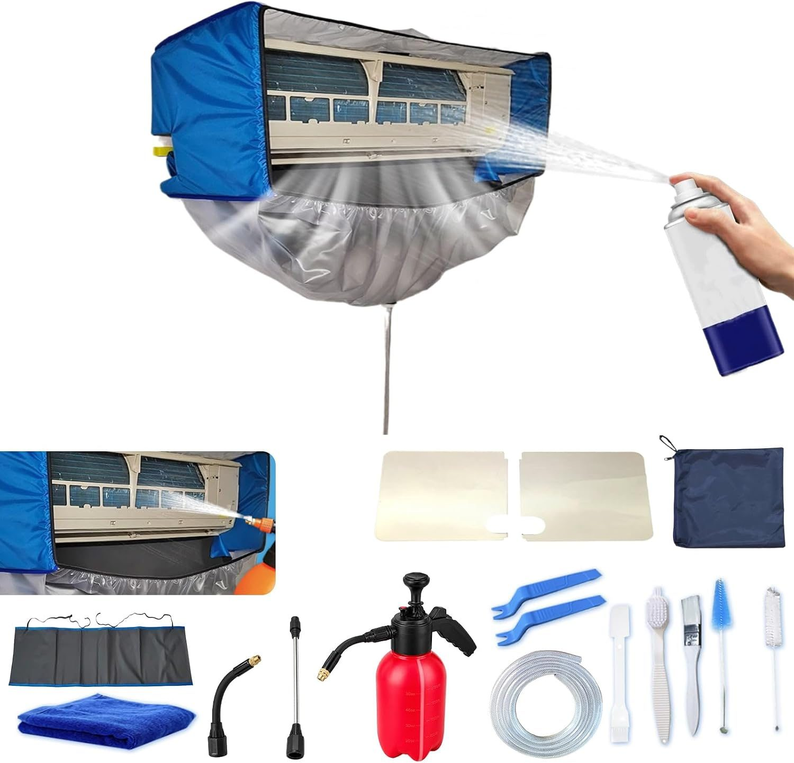

KIKEPILM
Sacco Kit Per Pulizia Split Condizionatore(Pannelli Laterali Migliorati),Sacco Pulizia Climatizzatore Spazio Extra (blu e bianco, extra grande, 18 pezzi)
58,90 €
Prezzo KIKEPILM, IVA inclusa
| Marca | KIKEPILM |
| Modello (ASIN) | B0HGFYGFV2 |
| Colore | Blu E Bianco (Con Bollitore) |
| Taglia | Extra Grande |
| Prezzo | 58,90 € |
| Valuta | EUR |
Acquisto, spedizione e reso avvengono tramite Amazon.
Informazioni su questo articolo
- 1. Pannelli laterali migliorati e design in PVC 2025 impermeabile Il kit per la pulizia del condizionatore d'aria Kikepilm è realizzato con l'ultimo materiale in PVC del 2025. I pannelli laterali rinforzati prevengono le perdite e proteggono le pareti durante la pulizia profonda, mentre il bavaglino di scarico extra-ampio raccoglie efficacemente detriti e acqua. Perfetto per condizionatori d'aria split system, condizionatori d'aria a parete e pompe di calore split system
- 2. Installazione semplice con strumenti intelligenti e facili da usare Progettato per un'installazione rapida e senza attrezzi, questo kit include spazzole con codice colore (setole morbide/dure) e una piastra di leva ergonomica per una rimozione sicura del pannello. Grazie al design pieghevole e leggero e agli intuitivi scomparti di stoccaggio, puoi iniziare a pulire in pochi minuti, senza bisogno di competenze specifiche! Ideale per gli amanti del fai da te e i professionisti del settore HVAC
- 3. Mini borsa per la pulizia divisa, ultra resistente e portatile, di grandi dimensioni Questo mini kit di pulizia diviso è realizzato in nuovo materiale PVC anti-crepa migliorato, comprendente 1 mini sacchetto di pulizia diviso; 1* mini sacchetto di pulizia diviso; 1* spazzola multiuso per la pulizia a setole grosse; 1* telo di protezione per pareti; 1* tubo di scarico da 9,1 piedi; 2 * piastre di leva; 2 * pannelli laterali; 1 * spazzola multiuso (setole morbide); 1 * spazzola a fessura (setole morbide);
- 1 * asciugamano; 1 * spazzola per fessura filtro; 1 * spazzola a rullo per la pulizia dell'uscita dell'aria; 1 * sacchetto per imballaggio; 1 bottiglia d'acqua da 2 litri; 1 * accessorio per testa del palo pieghevole liberamente; 1 * accessorio con testa asta lunga (estesa 16 cm/6,3 pollici) 1 * accessorio con ugello corto (già installato sulla bottiglia d'acqua)； Il kit per la pulizia del condizionatore è facile da trasportare ed è molto adatto per lavori in loco o per la manutenzione domestica
- 4. Pulizia profonda per migliorare le prestazioni dell'aria condizionata Il nostro strumento professionale per la pulizia di condotti e spazzole a rullo. Ripristina il flusso d'aria, riduci il consumo energetico del 25% e prolunga la durata del tuo condizionatore. Adatto per mini condizionatori split, condizionatori da finestra e sistemi di condizionamento centralizzati